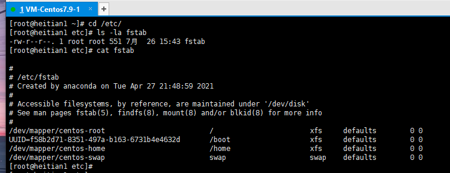
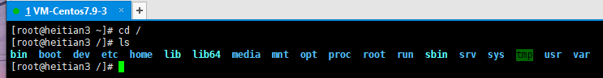
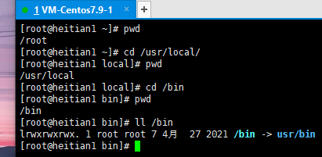
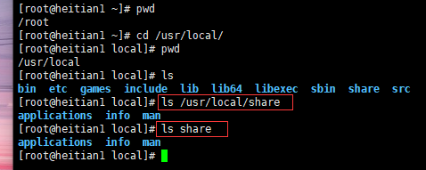
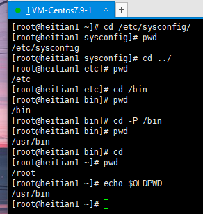
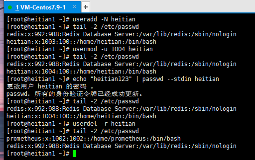

1-week
1. 图文并茂解释开源许可证 GPL、BSD、MIT、Mozilla、Apache和LGPL的区别？
2. 安装各发行版系统的安装(centos, rockylinux, ubuntu, 等)
1）CentOS
2）Ubuntu
3. Linux中总结
1）如何通过一个简短的关键字，例如process 获取相关的命令。
2）通过命令的描述，选择一个命令，获取命令的man文档。
3）解读man文档，man分几个部分？man每个部分的解释，特别是语法部分。<>, [] …等各代表什么含义。
4）根据语法部分 简要的写几个操作。
4. 切换到/etc/目录，列出fstab文件的详细信息，详细解决fstab一行，每个或每几个字符的详细含义。

一、文件介绍
/etc/fstab：自动挂载，系统开机时会主动读取这个文件内容，并按照配置挂载磁盘。
二、文件解析
从图中可以看出配置一共六列，这六列的含义分别是:
第一列：磁盘设备文件或者设备的Label或者UUID。
Label和UUID可通过dumpe2fs -h /dev/sda1命令查看/dev/sda1的信息；
其中"Filesystem volume name:"是Label; "Filesystem UUID:"是UUID;
第二列：磁盘挂载目录，挂载点。
/、/usr、/swap是安装系统是分区的默认挂载点；
swap为交换分区不设置挂载点默认为none或swap；
挂载目录必须存在；
第三列：磁盘文件系统的格式。
磁盘文件系统的格式，包括ext3、ext4、nfs、swap、xfs等；
其中swap是交换分区；
第四列：挂载目录的参数。
Async/sync：设置是否为同步方式运行，默认为async；
auto/noauto：当下载mount -a 的命令时，此文件系统是否被主动挂载。默认为auto；
rw/ro：是否以以只读或者读写模式挂载；
exec/noexec：限制此文件系统内是否能够进行"执行"的操作；
user/nouser：是否允许用户使用mount命令挂载；
suid/nosuid：是否允许SUID的存在；
Usrquota：启动文件系统支持磁盘配额模式；
Grpquota：启动文件系统对群组磁盘配额模式的支持；
Defaults：同时具有rw,suid,dev,exec,auto,nouser,async等默认参数的设置；
第五列：能否被dump备份程序备份。
0：不被dump备份；
1：使用dump的备份，并显示上一次备份至今的天数；
2：不定日期的进行dump备份；
第六列：是否检验扇区，fask检验系统是否完整。
0：不检验扇区；
1：优先检验（根据目录设置）；
2：1级别检验完之后经行检验；
/目录永远是1，不能同时设置两个1。数字相同时同时检验；
解释第一行：
将"/dev/mapper/centos-root"磁盘文件系统挂载到"/"目录下；磁盘文件系统的格式是"xfs"；
参数为"defaults"拥有所有参数的默认设置，不被dump程序备份，不被fask检验文件系统完整性。
5. 简要说明FHS结构。
文件系统FHS简介

Linux的文件系统层级结构：FileSystem Hierarchy Standdard(简称FHS)
/boot： 引导文件存放目录
/bin：所有用户使用的基本命令
/sbin：管理类的基本命令
/lib：启动时程序以来的基本共享库文件以及内核模块文件（/lib/modules）
/lib64：专用x86_64系统上的辅助共享库文件存放位置
/etc：配置文件目录
/root：管理员家目录
/dev：设备文件及特殊文件存储位置
b：block device，随机访问
c：character device，线性访问
/home/USERNAME：普通用户的家目录
/media：便携式移动设备挂载点
/mnt：临时文件系统挂载点
/opt：第三方应用程序的安装位置
/proc：用于输出内核与进程信息相关的虚拟文件系统
/srv：系统上运行的服务用到的数据
/sys：用于输出当前系统上硬件设备相关信息的虚拟文件系统
/tmp：临时文件存储位置
/usr：universal shared，read-only data
bin：保证系统拥有完整功能而提供的应用程序
sbin：
lib：32位使用
lin64：只存在64位系统
include：C程序的头文件
share：结构化独立数据
local：第三方应用程序的安装位置
bin，sbin，lib，lin64，etc，share
/var：variable data files
cache：应用程序缓存数据目录
lin：应用程序状态信息数据
local：专用于为/usr/local/下的应用程序存储可变数据
lock：锁文件
log：日志目录及文件
opt：专用于为/opt下的应用程序存储可变数据
run：运行中的进程相关数据，通常用于存储pid进程文件
spool：应用程序数据池
tmp：保存系统两次重启之间产生的临时数据
6. 用自己的理解总结 文件管理，用户管理，组用户，权限管理相关的命令。
文件管理
Linux下的文件类型
-：普通文件
d：目录文件directory
l：符号链接文件link
b：块设备block
c：字符设备character
p：管道文件pipe
s：套接字文件socket
文件操作命令
显示当前工作目录
命令 "pwd"：printing working directory
用法 pwd [OPTION]...
-P 显示真实物理路径
-L 显示连接路径（默认）

绝对路径和相对路径
绝对路径
以正斜杠"/"即目录开始
完整的文件的位置路径
可用于任何想指定一个文件名的时候
相对路径
不以斜杠开始
一般情况下，是指相对于当前工作目录的路径；特殊情况下，是相对于某目录的位置
可以作为一个简短的形式指定一个文件名

更改目录
命令 "cd"：change directory 改变目录
用法 cd [OPTION] dir
-P：切换至物理路径，而非软连接目录
可以使用绝对路径或相对路径
切换至父目录 "cd .."
切换至当前用户主目录 "cd"
切换至以前的工作目录 "cd -"
相关的环境变量
"pwd"：当前目录路径
"OLDPWD"：上一次目录路径

创建空文件和刷新时间
命令 "touch"：可以用来创建空文件或刷新文件的时间
用法 touch [OPTION]... FILE...
-a：仅改变atime和ctime
-m：仅改变mitme和ctime
-t：[[CC]YY]MMDDhhmm[.ss] 指定atime和ctime的时间戳
-c：如果文件不存在，则不创建
复制文件和目录
命令 "cp(copy)"：可以实现文件或目录的复制
用法：
cp [option]... [-T] SOURCE DEST
cp [option]... SOURCE... DIRECTORY
cp [option]... -t DIRECTORY SOURCE...
-i：如果目标已存在，覆盖前提示是否覆盖
-n：不覆盖，注意两者顺序
-r，-R：递归复制
-d：不复制源文件，只复制链接名
-u：只复制源比目标更新文件或目标不存在的文件
-b：目标存在，覆盖前先备份，默认形式为filename~，只保留最近的一个备份
移动和重命名文件
命令 "mv"：可以实现文件或目录移动和改名
同一分区移动数据，速度很快，数据位置没有变化
不同分区移动数据，速度相对慢，数据位置发生了变化
用法：
mv [OPTION]... [-T] SOURCE DEST
mv [OPTION]... SOURCE... DIRECTORY
mv [OPTION]... -t DIRECTORY source...
-i：交互式
-f：强制
-b：目标存在，覆盖前先备份
删除文件
命令 "rm"：可以删除文件和目录
此命令非常危险，谨慎使用
用法：rm [OPTION]... FILE...
-i：交互式
-f：强制删除
-r：递归
目录操作命令
列出目录内容
命令 "ls"：可以列出当前目录内容或指定目录内容
用法 ls [options] [files_or_dirs]
-a：包含隐藏文件
-l：显示额外信息
-R：目录递归
-ld：目录和符号链接信息
-1：文件分行显示
-S：按文件大小排序
-t：按mtime排序
-u：配合-t选项，显示并按atime从新到旧排序
-X：按文件后缀排序
"ls -l"看到的文件大小，不一定是实际文件真正占用空间的大小
显示目录结构
命令 "tree"：以树状显示目录结构
-d：只显示目录
-L level：置顶显示的层级数目
创建目录
命令 "mkdir"：创建目录
-p：存在于不报错，自动创建所需要的各目录，递归创建
-v：显示详细信息
删除空目录
命令 "rmdir"：删除空目录
-p：递归删除父空目录
-v：显示详细信息
用户管理
创建用户
命令 "useradd"：创建新用户
用法：useradd [options] login_name
-u：uid
-o：配合-u选项，不检查uid唯一性
-g：gid，指明用户所属基本组，可为组名，也可以gid
-c："COMMENT" 用户的注释信息
-d：HOME_DIR 以指定的路径（不存在）为家目录
-s：指明用户的默认shell程序，可用列表在/etc/shells文件中
-G：GROUP1[,GROUP2,...] 为用户指明附加组，组需要存在
-N：不创建私用组做主组，使用users组做主组
-r：创建系统用户 centos6之前ID<500 centos7之后ID<1000
-m：创建家目录，用于系统用户
-M：不创建家目录，用于非系统用户
-p：指定加密的密码
删除用户
命令 "userdel"：删除指定用户
用法 userdel [options] login_name
-f，--force：强制
-r，--remove：删除用户家目录和邮箱
修改用户属性
命令 "usermod"：可以修改用户属性
用法 usermod [options] login_name
-u：更改uid
-g：更改主组
-G：新附加组，原有的会被覆盖，若要保留原有，则同时使用-a选项
-s：更改shell程序
-c："COMMENT" 新的注释信息
-d：HOME 新家目录不会自动创建，若要创建新家目录并移动原有数据，同时使用-m选项
-l：login_name 新名字
-L：锁定用户，在/etc/shadow密码栏增加！
-U：解锁用户，将/etc/shadow密码栏的！去掉
-e：YYYY-MM-DD 指定用户账号过期日期
-f：设定非活动期限，即宽限期
修改用户密码
命令 "passwd"：修改用户密码
用法 passwd [OPTIONS] UserName
-d：删除指定用户密码
-l：锁定指定用户
-u：解锁指定用户
-e：强制用户下次登陆时修改密码
-f：强制操作
-n：mindays：指定最短使用期限
-x：maxdays：最大使用期限
-w：warndays：提前多少天开始警告
-i：inactivedays：非活动期限
--stdin：从标准输入接受用户密码，Ubuntu无此选项

组用户
创建组
命令 "groupadd"：创建组
用法 groupadd [OPTION]... group_name
-g：指定GID号
-r：创建系统组；Centos6之前I<500;Centos7之后ID<1000
删除组
命令 "groupdel"：删除组
用法 groupdel [optinos] group_name
-f，force：强制删除，即使是用户主组也强制删除组，但会导致无主组的用户不可用无法登录
修改组属性
命令 "groupmod"：组属性修改
用法 groupmod [option]... group
-n，group_name：新组名
-g，GID：修改gid号
权限管理
更改属组属主
命令 "chown"：修改文件的属主和属组
用法：
chown [option]... [owner][:[group]] filename...
chown [option]... --reference=RFILE filename...
owner：只修改属主
owner:group ：同时修改属主和属组
:group ：只修改属组，冒号也可用.代替
--reference=RFILE：参考指定的文件的属性来修改
-R：递归，此选项慎用！
更改文件权限
命令 "chmod"：修改文件权限
文件权限分为三种：读；写；执行
读=r=4 ； 写=w=2 ； 执行=x=1
文件用户也分为三种：
owner=属主=u ； group=属组=g ； other=其他用户=o ； 所有用户=a
r和w权限对root用户无效
属主，属组，其他用户，三者之一有x权限，root就可以执行
用法：
chmod [option]... mode[,mode]... file...
chmod [option]... cotal-mode file...
chmod [option]... --reference=RFILE file...
-R：递归修改权限
本博客所有文章除特别声明外，均采用 CC BY-SA 4.0 协议 ，转载请注明出处！